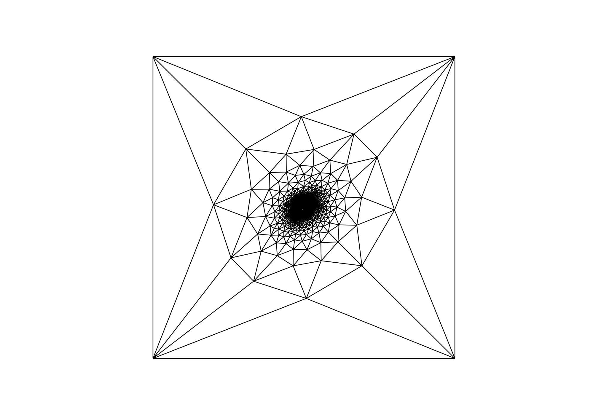

Mesh parametrisation

Note
This example is a Python version of the example found on the web page of Chris Tralie (http://www.ctralie.com/Teaching/LapMesh/). The examples there are an implementation of the laplacian mesh editing framework described in https://igl.ethz.ch/projects/Laplacian-mesh-processing/Laplacian-mesh-editing/laplacian-mesh-editing.pdf.
"""Parameterisation of a triangle mesh.
For more info see:
- http://www.ctralie.com/Teaching/LapMesh/
"""
from __future__ import print_function
import compas
from numpy import zeros
from scipy.sparse import coo_matrix
from scipy.sparse import block_diag
from scipy.sparse.linalg import spsolve
from compas.datastructures import Mesh
from compas.plotters import MeshPlotter
__author__ = ['Tom Van Mele', ]
__copyright__ = 'Copyright 2016 - Block Research Group, ETH Zurich'
__license__ = 'MIT'
__email__ = 'van.mele@arch.ethz.ch'
# make a *stanford bunny* mesh
mesh = Mesh.from_ply(compas.get_bunny())
mesh.cull_vertices()
# get any vertex of the mesh
# and its neighbours
v1 = mesh.get_any_vertex()
nbrs = mesh.vertex_neighbours(v1, ordered=True)
# make a quad containing:
# one of the neighbours
# and the CCW and CW neighbours of that neighbour, respectively
# and set them as anchors
v2 = nbrs[0]
v3 = nbrs[1]
v4 = nbrs[-1]
anchors = [v1, v2, v3, v4]
# make a laplacian matrix of the mesh
# with inplace constraints on the anchored vertices
data = []
rows = []
cols = []
key_index = mesh.key_index()
for key in mesh.vertices():
r = key_index[key]
data.append(1)
rows.append(r)
cols.append(r)
if key not in anchors:
nbrs = mesh.vertex_neighbours(key)
w = len(nbrs)
d = - 1. / w
for nbr in nbrs:
c = key_index[nbr]
data.append(d)
rows.append(r)
cols.append(c)
L = coo_matrix((data, (rows, cols)))
# construct the RHS of the equation
# with all difference vectors set to zero
# and the ones corresponding to the anchored vertices
# set to the corresponding position on a unit square
n = mesh.number_of_vertices()
d = zeros((n, 2), dtype=float)
d[key_index[v1], 0] = 1.0
d[key_index[v2], 1] = 1.0
d[key_index[v3], 0] = 1.0
d[key_index[v3], 1] = 1.0
# convert eerything to a format
# that can be solved with the sparse solver of scipy
# and solve for the parameterised xy coordinates
L = block_diag((L, L)).tocsr()
d = d.reshape((-1, 1), order='F')
x = spsolve(L, d.ravel())
# convert the result back
xy = x.reshape((-1, 2), order='F')
# update the mesh
for key, attr in mesh.vertices(True):
index = key_index[key]
attr['x'] = xy[index, 0]
attr['y'] = xy[index, 1]
# lines for visualisation
# omit the diagonal of the *hole*
lines = []
for u, v in mesh.wireframe():
if u == v1 and v == v2:
continue
if u == v2 and v == v1:
continue
lines.append({
'start': mesh.vertex_coordinates(u, 'xy'),
'end' : mesh.vertex_coordinates(v, 'xy'),
'color': '#000000',
'width': 0.5
})
# visualise the result
plotter = MeshPlotter(mesh, figsize=(10, 6))
plotter.draw_lines(lines)
plotter.show()